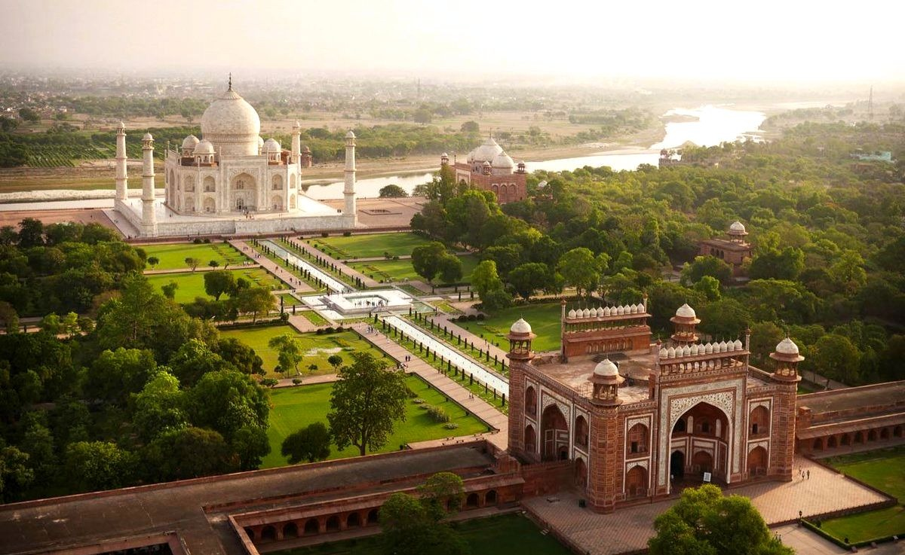
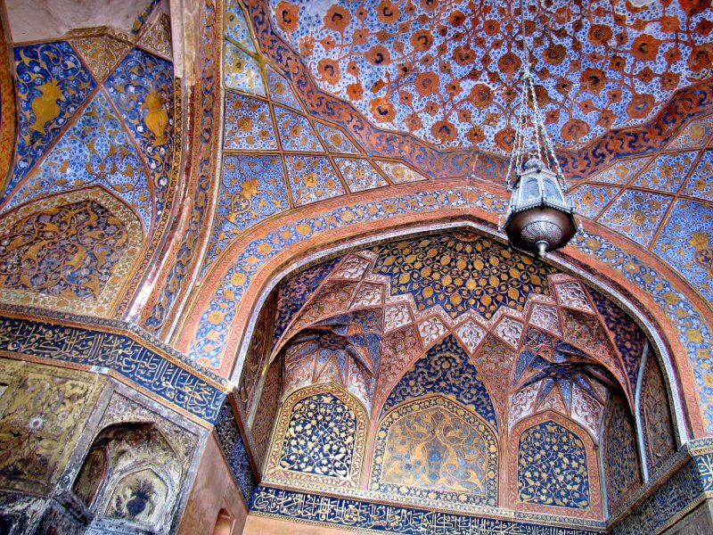
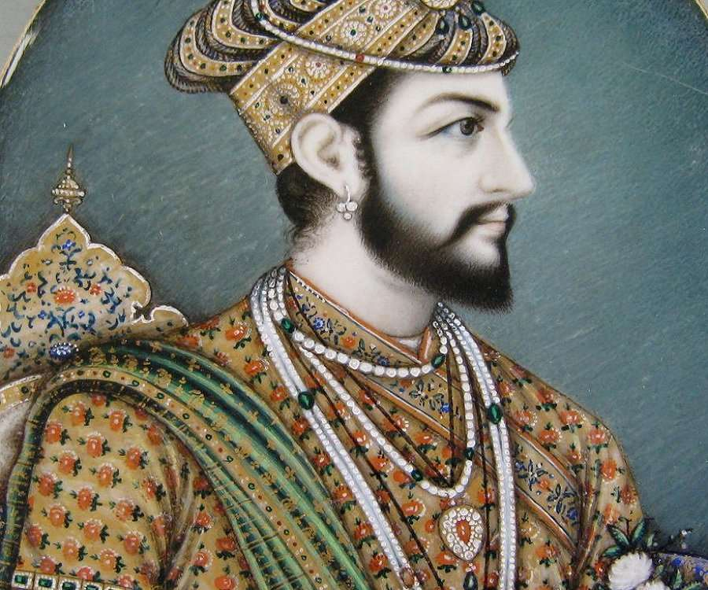
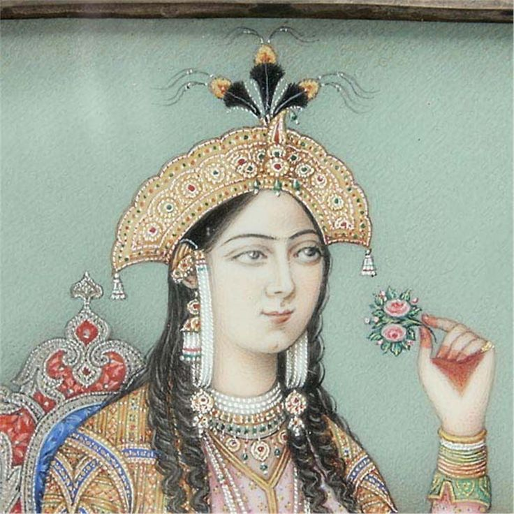
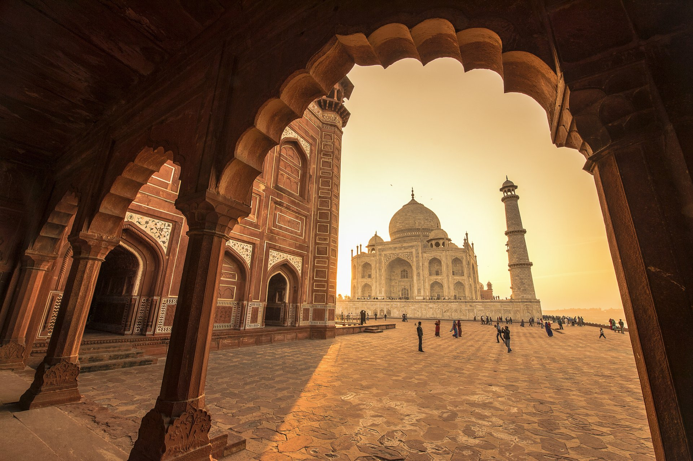
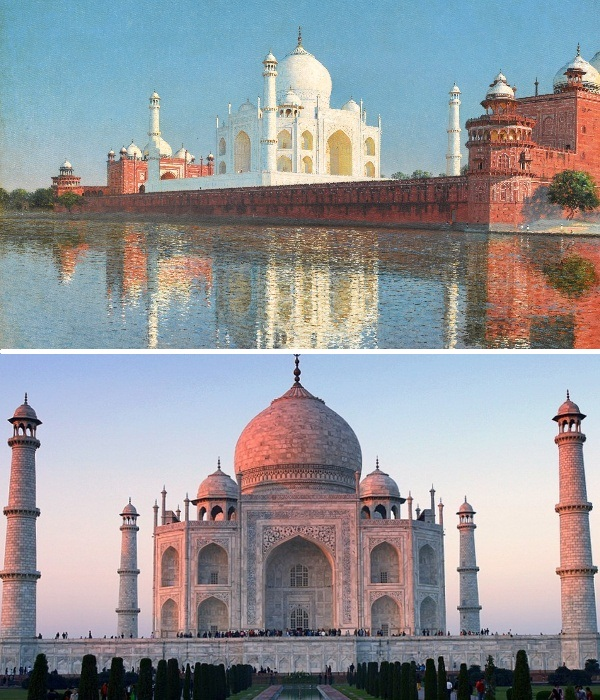
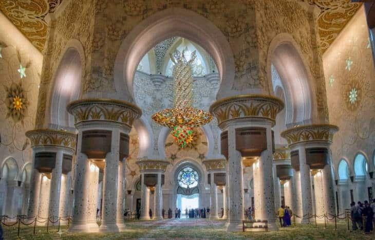
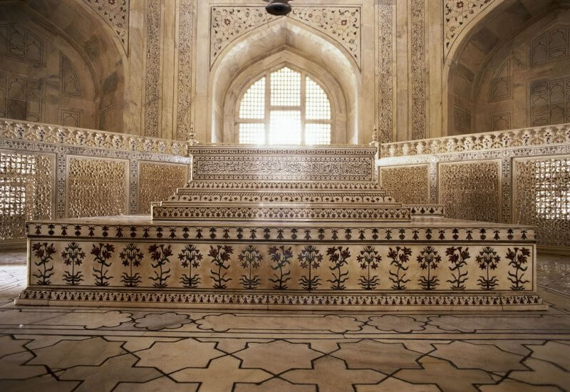

Тадж-Махал
Тадж-Махал — мавзолей-мечеть в Агре, является одним из шедевров мировой архитектуры, находится на севере индийского штата
Уттар-Прадеш. Шах Джахан, правитель этих мест, приказал соорудить Тадж-Махал в честь своей супруги Мумтаз-Махал, отмечая таким
образом 18 лет счастливого брака и ее кончину при рождении их четырнадцатого ребенка. В знак своей любви и в память о прекрасной
супруге шах приказал возвести самый великолепный мавзолей на свете.
Архитектура

Агра – город в Индии, известный благодаря необычной мечети, цвет стен которой меняется в разное время суток. Мавзолей
Тадж-Махал (на англ. Taj Mahal) построен на берегу реки Джамна. Мечеть возведена в память о любимой супруге правителя Шаха
Джахана Мумтаз-Махал.
Эта постройка стала одним из лучших примеров архитектуры, в которой использованы арабский, персидский и индийский стили.
Тадж-Махал – это ансамбль, состоящий из центральных ворот, сада, мечети, павильона для гостей и дворца-мавзолея, внутри
которого находятся гробницы Мумтаз-Махал и Шах-Джахана. Ограждённая с 3-х сторон территория, на которой обустроен комплекс,
имеет прямоугольную форму (размеры 600 и 300 метров). Главные ворота, выполненные из красного камня, напоминают небольшой
дворец с боковыми башнями. Эти башни увенчаны куполами, а над самым входом в 2 ряда по 11 штук расположены маленькие
купола-зонтики. На входных воротах есть фразы из Корана, которые заканчиваются словами «Войди в Мой рай!» – Шах-Джахан
создавал рай для своей возлюбленной.

Неотъемлемой частью ансамбля, выгодно подчёркивающей цвет и текстуру усыпальницы, являются Чар-Багх (4 сада). По центру
дороги, проложенной от ворот к мавзолею, идёт канал, в водах которого отражается это белоснежное мраморное здание.
С западной стороны от мавзолея стоит мечеть из красного песчаника, к востоку – гостевой дом. Его основная задача
заключалась лишь в том, чтобы сохранить симметричность всего архитектурного комплекса.
История любви

Будущий правитель однажды встретил на рынке девушку из бедной семьи, которая потрясла его своей красотой. Он решил больше
не расставаться с прекрасной незнакомкой и взял ее в жены. Так 19-летняя Мумтаз-Махал стала второй женой принца Гурама, который
вошел в историю как Шах Джахан. У правителя было много наложниц, но именно эта девушка завоевала его сердце. Он советовался с
ней во всех вопросах и приглашал на важные церемонии. Но счастье не было долгим.
Не желая расставаться с мужем даже во время военных походов, Мумтаз преданно сопровождала его. Ее ничто не могло остановить —
ни тяжелые походные условия, ни плохое самочувствие, ни беременность. И однажды это закончилось плохо: после трудных родов,
14-х по счету, прекрасная Мумтаз так и не смогла оправиться и умерла. Вообще в то время многодетные матери были не редкостью,
и 14 детей вовсе не были чем-то необычным. Мумтаз, вероятнее всего, погубили именно условия похода: они никак не подходили
беременной женщине. Императрицы не стало в 1631 году, ей тогда не исполнилось и 40 лет. Несчастье произошло в лагере под
Бурханпуром, и император до последней минуты не выпускал рук любимой жены из своих рук. По преданию, перед смертью она взяла
с мужа два обещания: первое — что он не будет иметь детей от других женщин, и второе — что он построит в ее память мавзолей,
которым будут любоваться люди.

Безутешный Шах-Джахан, потеряв жену, восемь дней не выходил из своих покоев. Он ничего не ел и никому не позволял заговаривать
с ним. По некоторым данным, он даже пытался покончить с собой, настолько нестерпимой казалась потеря. Правитель установил в
стране двухлетний траур: на это время запрещалось любое веселье среди населения, музыка и танцы, праздники и свадьбы. А сам он
надолго потерял интерес к жизни, окончательно перестал интересоваться своим гаремом и целыми днями тосковал по прекрасной
Мумтаз, оплакивая любимую.
Строительство

Землю, на которой появилась усыпальница, император приобрел у одного из подданных. Грандиозная стройка началась в 1632 году.
Возводили мечеть Тадж-Махал более 20 тысяч человек, которые приехали из разных уголков страны. Чтобы дворец был безопасным,
рабочим пришлось трудится не покладая рук. Сначала они подготовили почву – огромную территорию тщательно перекопали, а грунт
на ней решено было заменить, чтобы здание получилось крепким.
Напряженная работа кипела и днем, и ночью. Чтобы прокормить трудившихся над возведением Тадж-Махала, приходилось использовать
зерно, предназначенное для жителей провинции. В стране начались финансовые проблемы и страшный голод. Мавзолей был возведен к
1643 году, а все сопутствующие работы удалось завершить только через 10 лет.
Споры о том, сколько правитель строил мечеть, длятся до сих пор. Также историки не пришли к единому мнению в вопросе, что
случилось после окончания работ со строителями. Популярны три версии:
- Их казнили, чтобы никто не выдал секреты величественной усыпальницы.
- Всем, кто возводил мавзолей, выкололи глаза и отрубили руки, чтобы позже они не смогли принять участие в создании подобного шедевра.
- Некоторые историки убеждены, что единственное, что ждало рабочих после завершения строительства – письменное заверение, что они не
будут участвовать в строительстве похожей усыпальницы.
Интересные факты
1. Кто же автор?
Так доподлинно неизвестно, кто построил усыпальницу – имя архитектора преднамеренно или случайно нигде не значится. Согласно
одной из версий, автором архитектурного шедевра был сам правитель, который обладал отменным вкусом. По другой версии, проект
создания комплекса принадлежал Устаду Ахмаду Лахаури. В некоторых источниках упоминается также имя подданного Турции Мухаммеда
Эфенди.

2. Великолепный мрамор
Благодаря особенностям полированного мрамора, Тадж-Махал изменяет свой цвет несколько раз в сутки: при восходе солнца кажется розовым,
днём при солнечном свете сияет белизной, в вечерних сумерках излучает лилово-розовое сияние, а при луне выглядит серебристым.
3. С миру по нитке
Строительные и отделочные материалы свозились практически со всего мира: белый мрамор – из земель Раджастхана, яшма – из Пенджаба,
жад – из Китая, карнеол – из Аравии, хризолит – с побережья Нила, сапфиры – из Цейлона, сердолик – из Багдада, рубины – из королевства
Сиам, бирюза – из Тибета.
4. Разбор лесов
Обычно при строительстве в Индии использовали леса из бамбука, а вокруг гробницы возвели кирпичные леса. Поскольку они были слишком
масштабными и прочными, руководившие работами мастера переживали, что разбирать их придётся не один год. Но Шах-Джахан приказал объявить,
что каждый желающий может взять любое количество кирпичей – в результате буквально за ночь всю вспомогательную постройку разобрали.

5. Защита мавзолея
В Индии существует серьезная проблема с загрязнением воздуха из-за интенсивного движения транспорта. Поэтому для защиты Тадж-Махала от
вредного воздействия загрязнений, автомобили и автобусы не должны стоять ближе, чем в 500 метрах от входа. Но от спуска легко дойти
пешком. К тому же, самолетам запрещено пролетать над зданием, так что это бесполетная зона
6. Утраченная красота
Ранние описания оригинального сада Тадж-Махала включают огромное количество нарциссов, роз и фруктовых деревьев. Но к концу XIX века
Британская империя взяла под контроль три пятых Индии. Поэтому вскоре они изменили ландшафт в соответствии со своими предпочтениями,
которые напоминали лондонские газоны.
7. Страшные войны
Тадж-Махал был скрыт Археологическим управлением Индии (ASI) во время Второй мировой войны. Он был покрыт огромным каркасом, из-за
которого сверху казался обычным запасом бамбука. Позже это снова произошло во время индо-пакистанской войны в 1971 году.
8. Роспись Тадж-Махала
Строчки с фразами из Корана выглядят одинаковыми вне зависимости от того, на какой высоте от пола они располагаются. Такой оптический
эффект создаётся следующим образом: чем выше расположена строчка, тем более масштабный используется шрифт и делается больший промежуток
между буквами.

9. Жизнь и смерть
Внутри усыпальница разделена на две части. Одна из них посвящена земному пути, а вторая – загробной жизни. К первой относятся
базарные улицы и дворы, ко второй – мавзолей и сад. Между ними находится особая арка и пруд, которые символизируют переходное
состояние.
10. Скромное оформление
В соответствии с мусульманскими традициями, могилы не могут быть богато украшенными, поскольку это может рассматриваться как неуместное
выражение тщеславия. По этой причине единственная часть мавзолея, в которой были захоронены Мумтаз-Махал и сам император Шах-Джахан (1592-1658 гг.) имеет весьма скромный вид, тем более что действительное захоронение находится глубоко под землей, а на поверхности только два мраморных надгробия символизирующих их могилы. До недавнего времени в подземелье пускали туристов, но сейчас вход закрыт.
Экскурсии
Дели и Тадж-Махал: поездка на два дня из Гоа
Цена: 248 долларов США
Где бы вы ни остановились в Индии, пару дней стоит уделить «индийской жемчужине» — величественному Тадж-Махалу, и Дели, одному
из самых древних и крупных городов мира. Это не просто must-see места, а возможность прикоснуться к великим сооружениям и истории
человечества; почувствовать ритм настоящей Индии на улицах столицы; поразиться духовной «всепронизанностью» и попытаться понять,
как живут эти удивительные люди. В Дели вы узнаете о мировых памятниках «столицы семи империй» и познакомитесь с основами
сикхизма, индуизма и бахаи. А в Агре встретитесь с легендой о потомке Тамерлана и его последнем подарке покойной жене, оцените
роскошь мавзолея и изучите исламо-индуистское зодчество на примере Красного форта.
- Включено: проживание в отелях 3* и завтраки
- Оплачивается дополнительно: авиабилеты Гоа-Дели-Гоа (~200$), обеды и ужины, входные билеты (около 60$/человека за все)
Тадж-Махал: поездка в Агру к главному символу Индии
Цена: 125 долларов США
Индию невозможно представить без Тадж-Махала — храма любви, окутанного тайнами и легендами. Я предлагаю отправиться в Агру,
чтобы воочию насладиться величественным сооружением. Вы узнаете детали из его судьбы и побываете у ещё одной реликвии
Средневековья — форта империи Великих Моголов.
- В стоимость включено: встреча в аэропорту, трансфер на автомобиле с кондиционером из вашего отеля в Дели и обратно, плата за парковки и проезд на всех участках дороги, обед (бизнес-ланч).
- Дополнительные расходы: вход в Тадж-Махал с посещением мавзолея — 1300 рупий с человека, Агра-форт — 600 рупий с человека.
- При оплате банковской картой скидка — 50 рупий на входные билеты
- Дорога до Агры занимает 3 часа